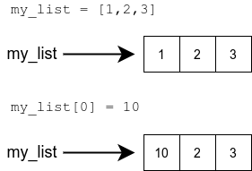
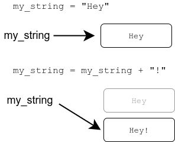

You are already familiar with the [] syntax for accessing a part of a string:
my_string = "exemplary"
print(my_string[3:7])
The same syntax works with lists. Lists can be sliced just like strings:
my_list = [3,4,2,4,6,1,2,4,2]
print(my_list[3:7])
In fact, the [] syntax works very similarly to the range function, which means we can also give it a step:
my_string = "exemplary"
print(my_string[0:7:2])
my_list = [1,2,3,4,5,6,7,8]
print(my_list[6:2:-1])
If we omit either of the indexes, the operator defaults to including everything. Among other things, this allows us to write a very short program to reverse a string:
my_string = input("Please type in a string: ")
print(my_string[::-1])
We know it is possible to assign new variables within function definitions, but the function can also see variables assigned outside it, in the main function. Such variables are called global variables.
Using global variables from within functions is usually a bad idea. Among other issues, doing so may cause bugs which are difficult to trace.
Below is an example of a function which uses a global variable “by mistake”:
def print_reversed(names: list):
# using the global variable instead of the parameter by accident
i = len(name_list) - 1
while i >= 0:
print(name_list[i])
i -= 1
# here the global variable is assigned
name_list = ["Steve", "Jean", "Katherine", "Paul"]
print_reversed(name_list)
print()
print_reversed(["Huey", "Dewey", "Louie"])
Even though both function calls have the right kind of argument, the function always prints out what is stored in the global variable name_list.
To make matters even more muddled, remember that all code for testing your functions should be placed within the if __name__ == "__main__": block for the automatic tests. The previous example should be modified:
def print_reversed(names: list):
# using the global variable instead of the parameter by accident
i = len(name_list) - 1
while i>=0:
print(name_list[i])
i -= 1
# All the code for testing the function should be within this block
if __name__ == "__main__":
# here the global variable is assigned
name_list = ["Steve", "Jean", "Katherine", "Paul"]
print_reversed(name_list)
print()
print_reversed(["Huey", "Dewey", "Louie"])
Notice the global variable is assigned within the if block now.
The automatic tests in the TMC system are executed without running any of the code in the if block. So, in this latter example the function wouldn’t even theoretically work, since it refers to the variable name_list, which doesn’t exist at all when the tests are executed.
Strings and lists have a lot in common, especially in the way they behave with different operators. The main difference is that strings are immutable. That means they cannot be changed.
my_string = "exemplary"
my_string[0] = "a"
Strings cannot be changed, so the execution of this program causes an error:
A similar error follows if you try to sort a string with the sort method.
Strings themselves are immutable, but the variables holding them are not. A string can be replaced by another string.
The following two examples are thus fundamentally different:
my_list = [1,2,3]
my_list[0] = 10

my_string = "Hey"
my_string = my_string + "!"

The first example changes the contents of the referenced list. The second example replaces the reference to the original string with a reference to another string. The original string is still somewhere in computer memory, but there is no reference to it, and it cannot be used in the program any longer.
We will return to this subject in the next part, where references to lists are explored in more detail.
The method count counts the number of times the specified item or substring occurs in the target. The method works similarly with both strings and lists:
my_string = "How much wood would a woodchuck chuck if a woodchuck could chuck wood"
print(my_string.count("ch"))
my_list = [1,2,3,1,4,5,1,6]
print(my_list.count(1))
The method will not count overlapping occurrences. For example, in the string aaaa the method counts only two occurrences of the substring aa, even though there would actually be three if overlapping occurrences were allowed.
The method replace creates a new string, where a specified substring is replaced with another string:
my_string = "Hi there"
new_string = my_string.replace("Hi", "Hey")
print(new_string)
The method will replace all occurrences of the substring:
sentence = "sheila sells seashells on the seashore"
print(sentence.replace("she", "SHE"))
When using the replace method, a typical mistake is forgetting that strings are immutable:
my_string = "Python is fun"
# Replaces the substring but doesn't store the result...
my_string.replace("Python", "Java")
print(my_string)
If the old string is no longer needed, the new string can be assigned to the same variable:
my_string = "Python is fun"
# Replaces the substring and stores the result in the same variable
my_string = my_string.replace("Python", "Java")
print(my_string)
This fourth part culminates in a slightly larger programming project, where you get to apply many of the techniques learnt so far.
Rule No. 1 in tackling any programming project is not trying to solve everything at once. The program should be built out of smaller sections, such as helper functions. You should verify the operation of each part before moving on to the next. If you try to handle too much at once, most likely only chaos ensues.
To do this you will need a way of testing your functions outside the main function. You can achieve this by defining a main function explicitly, and calling this function from outside any other function in the program. A single function call is then easy to comment out for testing. The first steps in building the following programming project could look like this:
def main():
points = []
# your program code goes here
main()
Now the helper functions can be tested without running the main function:
# helper function for determining the grade based on the amount of points
def grade(points):
# more code
def main():
all_points = []
# your program code goes here
# comment out the main function
#main()
# test the helper function
student_points = 35
result = grade(student_points)
print(result)
When a program contains multiple functions, the question arises: how do you pass data from one function to another?
The following example asks the user for some integer values. The program then prints out these values and performs an “analysis” on them. The program is divided into three separate functions:
def input_from_user(how_many: int):
print(f"Please type in {how_many} numbers:")
numbers = []
for i in range(how_many):
number = int(input(f"Number {i+1}: "))
numbers.append(number)
return numbers
def print_result(numbers: list):
print("The numbers are: ")
for number in numbers:
print(number)
def analyze(numbers: list):
mean = sum(numbers) / len(numbers)
return f"There are altogether {len(numbers)} numbers, the mean is {mean}, the smallest is {min(numbers)} and the greatest is {max(numbers)}"
# the "main function" using these functions
inputs = input_from_user(5)
print_result(inputs)
analysis_result = analyze(inputs)
print(analysis_result)
When the program is executed, it could go like this:
The idea here is that the main function “saves” all data processed by the program. In this case all that is needed is the input from the user in the variable inputs.
If the input is needed in a function, it is passed as an argument. This happens with the functions print_result and analyze. If the function produces data that is needed elsewhere in the program, the function returns it with the return command, and it is stored in a variable in the main function. This happens with the functions input_from_user and analyze.
You could use the global variable inputs from the main function directly in the helper functions. We have already covered why that is a bad idea, but here is another explanation. If functions are able to change a global variable, unexpected things may start happening in the program, especially when the number of functions grows large.
Passing data into and out of functions is best handled by arguments and return values.
You could also separate the implicit main function in the example above into its own function. Then the variable inputs would no longer be a global variable, but instead a local variable within the main function:
# your main function goes here
def main():
inputs = input_from_user(5)
print_result(inputs)
analysis_result = analyze(inputs)
print(analysis_result)
# run the main function
main()
Statistics: Points average: 14.5 Pass percentage: 75.0 Grade distribution: 5: 4: 3: * 2: 1: ** 0: *
Please respond to a quick questionnaire on this week’s materials.